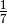

Reciprocal cycles¶
Problem 26
A unit fraction contains 1 in the numerator. The decimal representation of the unit fractions with denominators 2 to 10 are given:
= 0.5
= 0.(3)
= 0.25
= 0.2
= 0.1(6)
 = 0.(142857)
= 0.125
= 0.(1)
= 0.1
Where 0.1(6) means 0.166666..., and has a 1-digit recurring cycle. It can be seen that has a 6-digit recurring cycle.
Find the value of d < 1000 for which contains the longest recurring cycle in its decimal fraction part.
Solution
Compute the decimal expansion of a given fractional value, n/d.
def div( n, d ):
"""Fractional digits of n/d. If the digits repeat, a None is appended.
If the digits do not repeat, then no extra value is appended.
This may only work for n==1.
>>> from euler26 import div
>>> div(1,2)
[5]
>>> div(1,3)
[3, None]
>>> div(1,4)
[2, 5]
>>> div(1,5)
[2]
>>> div(1,6)
[1, 6, None]
>>> div(1,7)
[1, 4, 2, 8, 5, 7, None]
>>> div(1,8)
[1, 2, 5]
>>> div(1,9)
[1, None]
>>> div(1,10)
[1]
"""
nums= [ n ]
quotient= []
while n != 0:
q, r = divmod(n*10,d)
n= r
if n in nums:
quotient.append( q )
quotient.append( None ) # Sentinel for repeating
break
quotient.append( q )
nums.append( n )
# No sentinel, it was exact.
return quotient
Test the components in this module.
def test():
import doctest
doctest.testmod(verbose=0)
Compute the answer.
def answer():
long_q= []
long_d= None
for d in range(1,1000):
q= div( 1, d )
if len(q) > len(long_q):
long_q= q
long_d= d
#print( long_d, long_q )
return long_d
Confirm the answer.
def confirm(ans):
assert ans == 983, "{0!r} Incorrect".format(ans)
Create some output.
if __name__ == "__main__":
test()
ans= answer()
confirm( ans )
print( "The value of d < 1000 for which 1/d"
" contains the longest recurring cycle in its decimal fraction part:", ans )